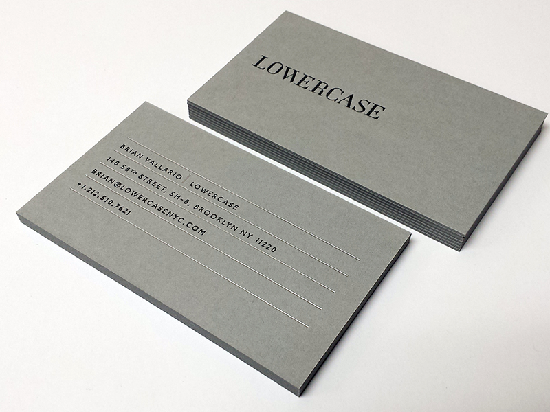
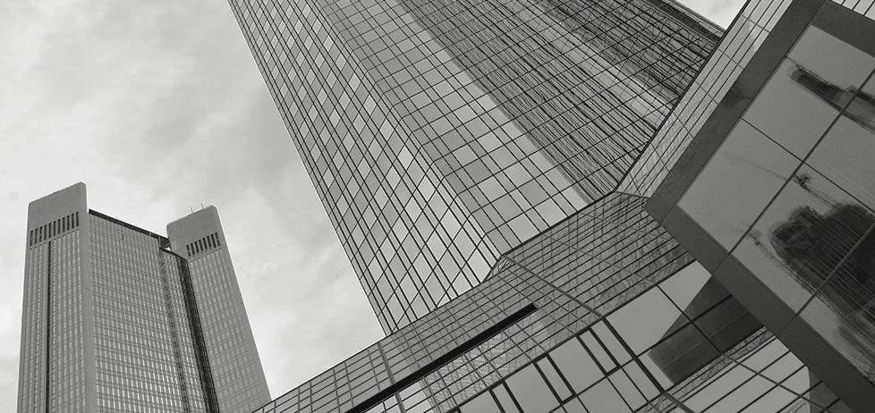

"I'm not running away from hard work,I'm just too lazy to run..."


Rose and Smith is pretty much about whatever I want it to be about but it's more for aesthics than an actual website but totally worth it. Nothing much here just words and you are reading them. I hope you enjoy!
Website Development
When I startedmy a website, my first priority was working on the technical side and making sure to make my webiste feasible since I would be the one working on it. By planning what I will and want to accomplish. Yes, it seems obvious, but this is an important part of creating a sucessful website.